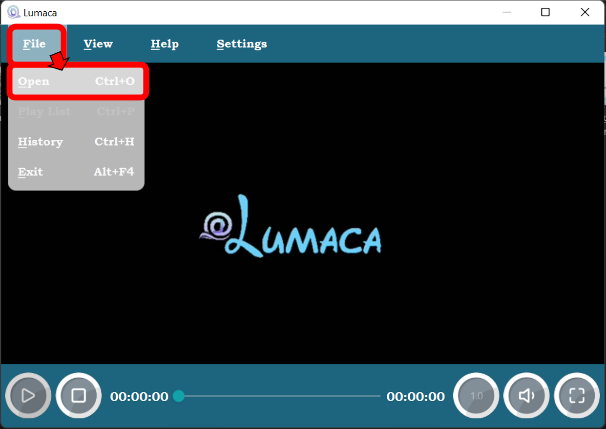

Main Window

01. Play Button
02. Stop Button
03. Play Progress Bar
04. Play Rate
05. Volume Control
06. Full Screen
07. Media Player
08. Menu Bar
How to Open a Media File
You can pressed the hot key Crtl + O to open file.
Or you can use the right-click menu or Open file from the top menu to open the media file:

In fact, you can also directly click the Play Button below to open the file when there is no media file to play.

By the way, you can drag the media file to the main view to open the file.

Menu Bar and Right-click menu
The menu is divided into three areas, namely File , View , and Help .